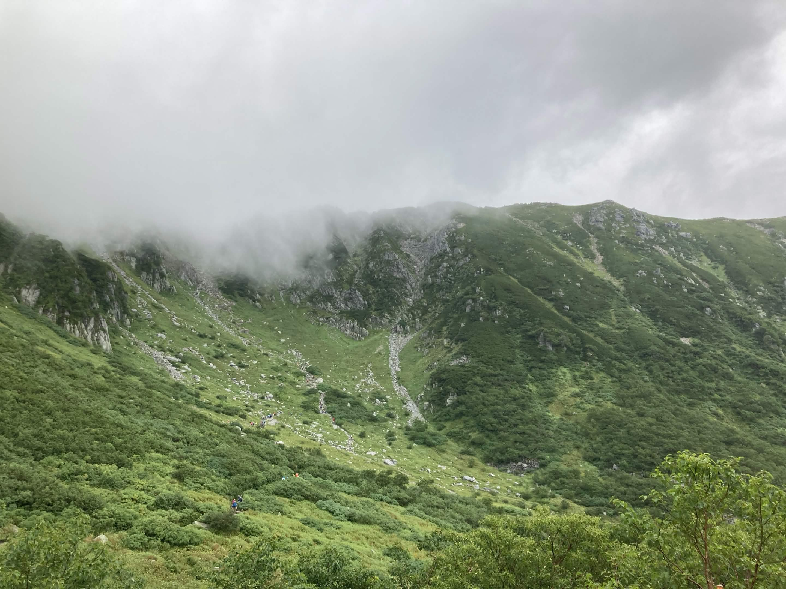
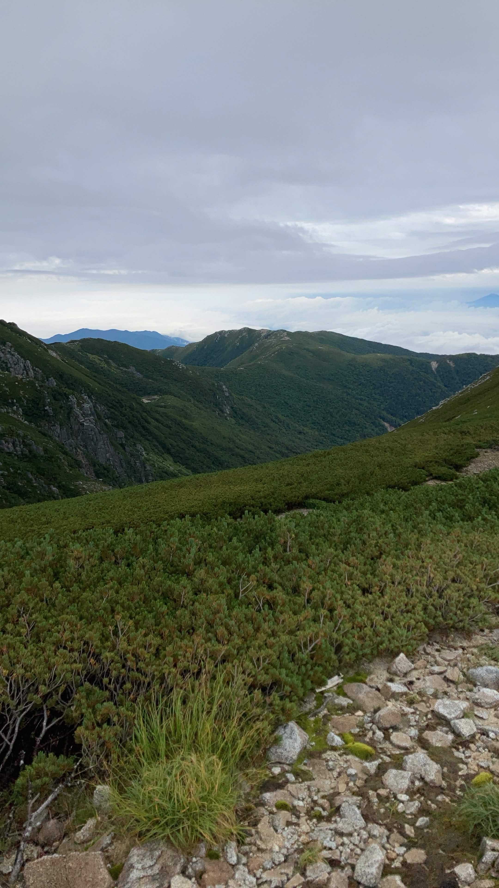
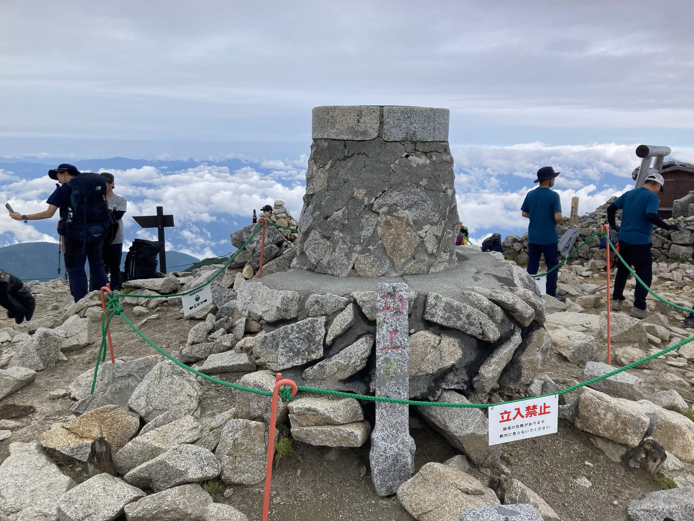

| 日程 | 2022年8月28日（登頂） |
|---|---|
| メンバー | ソロ（なし） |
| 難易度（俺流10段階） | 技術力 1 / 体力度 3 |
| アクセスコース目安 |
・千畳敷カール → 宝剣山荘：約25分 ・宝剣山荘 → 中岳：約20分 ・中岳 → 木曽駒ケ岳：約45分 |

自分にとって記念すべき「初めての日本アルプス登山」。標高2,900mを超える高山世界には、これまで見たこともないような圧巻の絶景が広がっていました。

この木曽駒ケ岳での体験が、自分の登山史の原点となりました。山頂からの景色を目にして、「これからもっといろいろな山に登ってみたい」という強い想いが湧き上がってきた最高の山行です！
← HOMEへ戻る